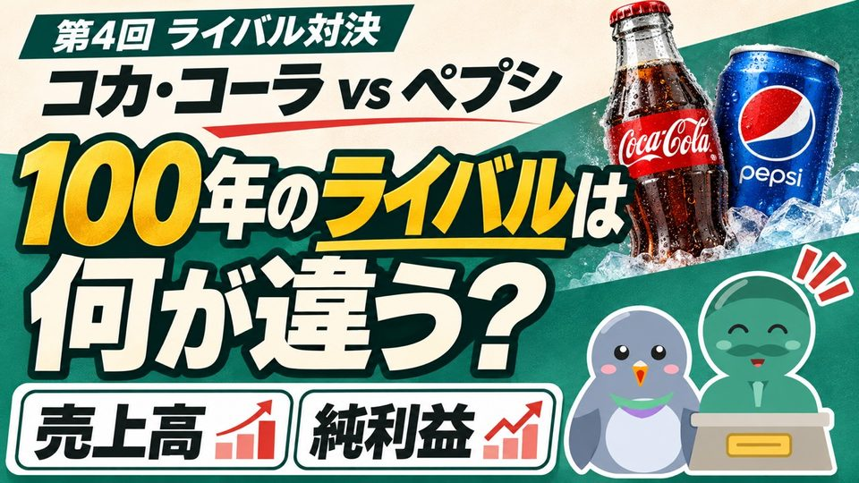
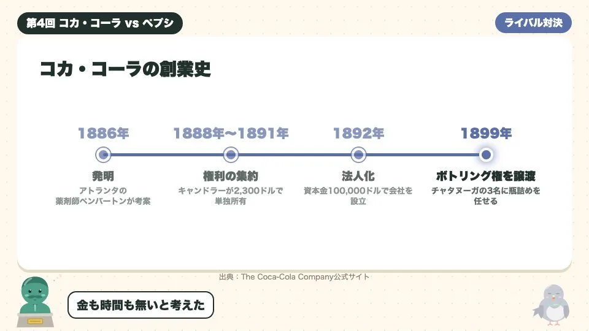
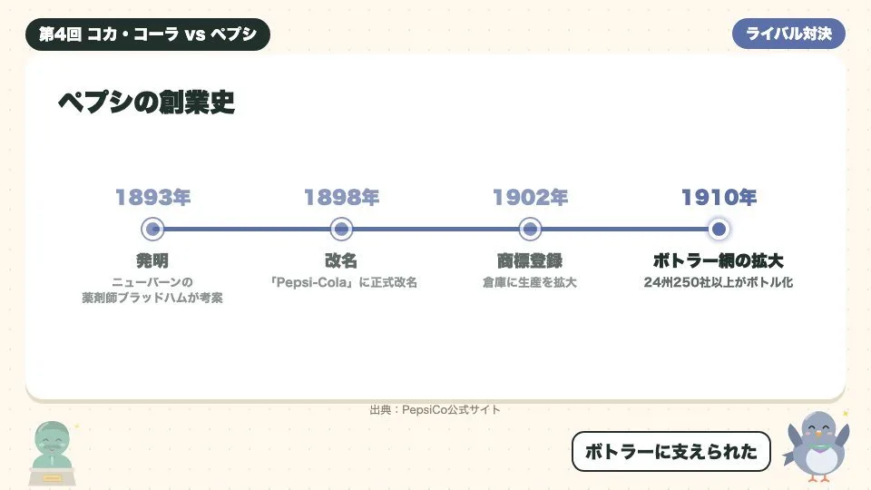
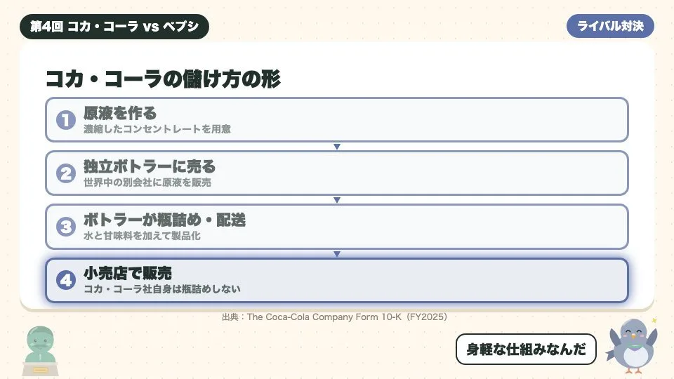
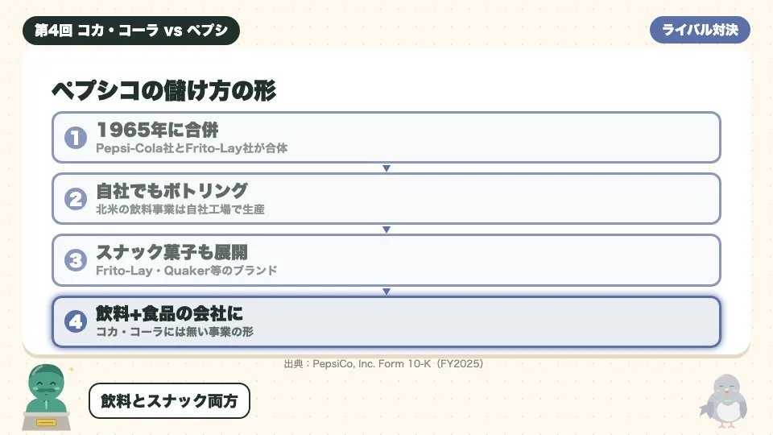
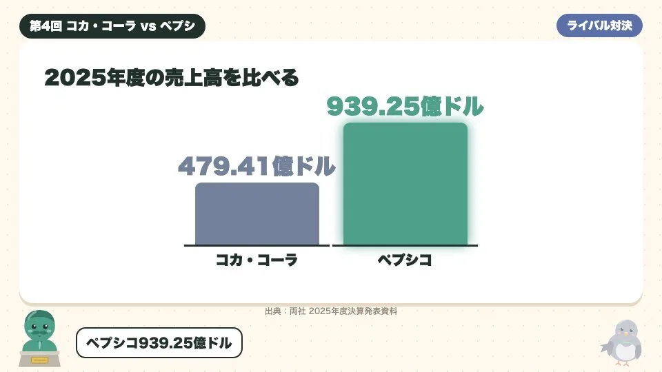
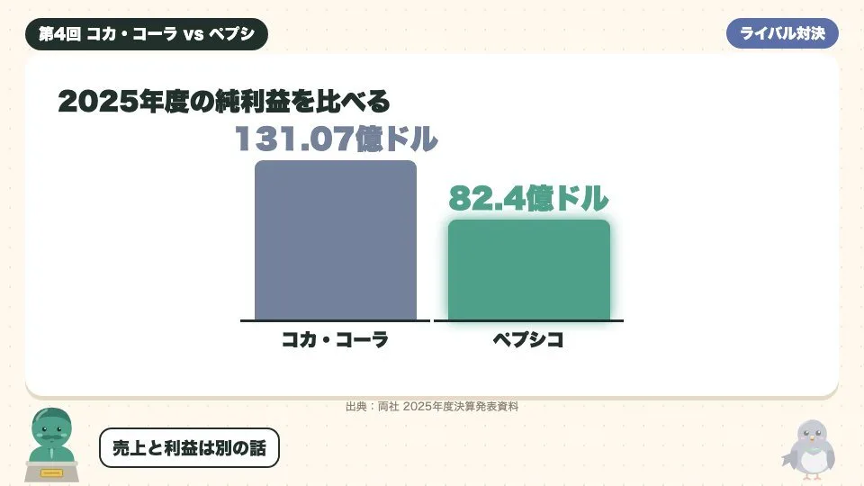
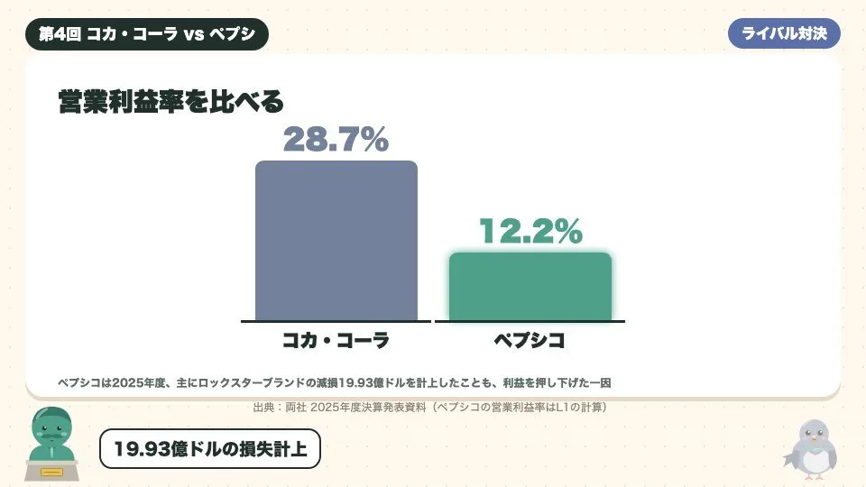
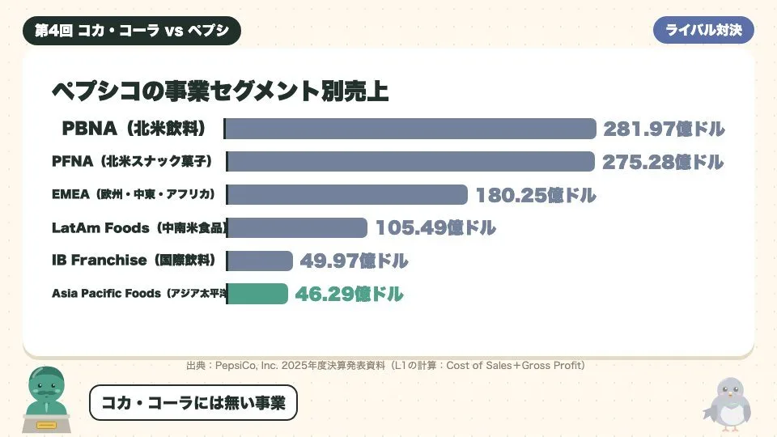
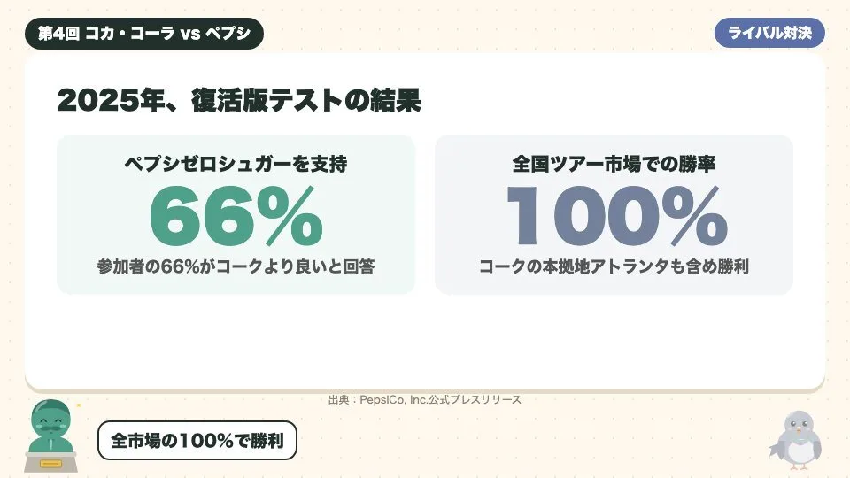

コカ・コーラとペプシの違いは、儲け方の形にあります。コカ・コーラは濃縮した原液を独立ボトラーに売るだけの軽い仕組みで、2025年度の営業利益率は28.7%。一方のペプシコは自社でもボトリングし、スナック菓子も手がける重い仕組みで、営業利益率はおよそ12.2%です。この記事では、両社が国に提出した決算書だけを使って、その違いを比べます。数字は2026年11月25日時点で確認したものです。

▶ この記事の内容を動画で見る（ビジネス解体新書）01どちらも100年を超える歴史を持つライバル
コカ・コーラは1886年、アトランタの薬剤師ペンバートンが考案したシロップから始まりました。1888年から1891年にかけて、キャンドラーという人物が2,300ドルでコカ・コーラの権利を単独で手に入れ、1892年に資本金100,000ドルで法人を設立しています。自社で瓶詰めをせず、外部に任せる今の形は、1899年にチャタヌーガの3名にボトリング(瓶詰め)の権利を譲ったところから始まりました。

ペプシは、コカ・コーラより7年あとの1893年、ノースカロライナ州の薬剤師ブラッドハムが考案しました。1898年に「Pepsi-Cola」へ正式に改名し、1902年に商標登録。1910年には24州250社以上がペプシをボトル化するまでに広がっています。

両社とも、100年を超える歴史を持つ本物のライバルです。
02儲け方の形はどう違うのか
コカ・コーラは、原液を作って独立ボトラーに売るだけで、水や甘味料を加えての瓶詰め・配送はボトラーに任せています。コカ・コーラ全体の取扱ケース量のうち、上位5社のボトラーが44%を担うほどの規模になっています。

ペプシコは、1965年にPepsi-Cola社がスナック菓子のフリトレー社と合併したことがきっかけで、今の形になりました。北米の飲料事業は独立ボトラーに任せず自社の工場で作り、フリトレーやクエーカーといったスナック菓子のブランドもペプシコの中にあります。

ポイントコカ・コーラは原液を売るだけの軽い仕組み、ペプシコは自社で作りスナックも売る重い仕組みです。
032025年度の決算で数字を比べる
両社が国に提出した決算書(Form 10-K、決算発表資料)の、2025年度の数字を比べます。
| 項目(2025年度) | コカ・コーラ | ペプシコ |
|---|---|---|
| 売上高 | 479.41億ドル | 939.25億ドル |
| 純利益 | 131.07億ドル | 82.4億ドル |
| 営業利益率 | 28.7% | 12.2% |
| 従業員数 | 65,900人 | 306,000人 |

売上高は、ペプシコ(939.25億ドル)がコカ・コーラ(479.41億ドル)のおよそ2倍です。ところが純利益を比べると様子が変わります。

純利益は、売上が約2倍少ないコカ・コーラ(131.07億ドル)の方が、ペプシコ(82.4億ドル)より多くなっています。売上の大きさと、もうけの大きさは別の話です。
04なぜペプシコの利益率は低いのか

売上に対する営業利益の割合である営業利益率は、コカ・コーラが28.7%、ペプシコはおよそ12.2%で半分以下です。理由の1つは、ペプシコ傘下のエナジードリンク「ロックスター」の資産価値が下がった分を、19.93億ドルの損失として計上したことです。
もう1つの理由が、事業の中身です。

ペプシコの売上を事業セグメント別に見ると、北米の飲料事業(PBNA)が281.97億ドル、北米のスナック菓子事業(PFNA)が275.28億ドルと、ほぼ同じ規模です。コカ・コーラには、このスナック菓子の事業がありません。
注意コカ・コーラは原液を売るだけでボトラーの設備や人件費を持たず、ペプシコは自社でも製造するため工場や物流のコストを負担します。さらに、飲料より利益率が低いスナック菓子の事業も含むため、利益率の差が広がります。
同じように、商品そのもののもうけとは別の収入源が利益を左右する例は、コストコはなぜ安いのに儲かるのかでも見られます。
05歴史に残る2つの対決
両社の歴史には、よく語られる対決が2つあります。
1つ目は、コカ・コーラの「New Coke」事件です。1985年4月23日、99年ぶりにレシピを変えた「New Coke」を発売しました。約200,000人規模の味覚テストでは新しいレシピの方が好まれていましたが、発売後は問い合わせの電話が1日1,500件に急増(変更前は1日400件)。発売からわずか79日後の1985年7月11日に、元のレシピを「コカ・コーラ クラシック」として復帰させています。
2つ目は、ペプシの「ペプシ・チャレンジ」です。目隠しで味を当てるこのブラインドテストは50年以上前に始まり、開始から50年にあたる2025年に再び実施されました。この2025年の復活版では、参加者の66%がペプシ ゼロシュガーをコーク ゼロシュガーより良いと回答し、全国ツアーで調べた市場の100%でペプシが勝っています。

味のテストで好まれても長年の愛着には勝てなかったのがNew Coke事件、味のテストでそのまま優位を示したのがペプシ・チャレンジです。長く続く会社でも、ブランドへの向き合い方で結果が分かれることは、コダック倒産の理由でも見られます。
06よくある質問
コカ・コーラとペプシ、売上高が大きいのはどっち?
2025年度はペプシコ(939.25億ドル)が、コカ・コーラ(479.41億ドル)のおよそ2倍です。
売上が大きいペプシコの方が、なぜ純利益は少ないの?
ペプシコは自社でボトリング工場を運営し、利益率が低いスナック菓子事業も含むため、営業利益率がコカ・コーラより低くなっています。加えて2025年度はロックスターブランドの減損19.93億ドルも利益を押し下げました。
コカ・コーラとペプシコの儲け方の形は何が違うの?
コカ・コーラは原液を独立ボトラーに売るだけですが、ペプシコは自社でもボトリングし、フリトレーなどのスナック菓子も展開しています。
どちらの会社が古いの?
コカ・コーラが1886年、ペプシが1893年の創業で、コカ・コーラの方が7年早く生まれています。
07まとめ
結論コカ・コーラとペプシの違いは、儲け方の形です。原液を売るだけの軽い仕組みと、自社で作りスナックも売る重い仕組みの差が、営業利益率28.7%と12.2%という数字に表れています。
- コカ・コーラは1886年、ペプシは1893年の創業で、どちらも100年を超える歴史を持つライバル
- 2025年度の売上高はペプシコが上、純利益はコカ・コーラが上
- 営業利益率はコカ・コーラ28.7%、ペプシコ12.2%。差の理由は、原液売りか自社製造かという儲け方の形
- New Coke事件もペプシ・チャレンジも、味のテストだけでは勝負が決まらないことを示している
同じコーラを売る2社でも、決算書を比べると儲け方の形がまるで違うことが分かります。
出典
- The Coca-Cola Company「The Birth of a Refreshing Idea」
- The Coca-Cola Company「The Asa Candler Era」
- Coca-Cola Bottling Co. United, Inc.「In the beginning...」
- The Coca-Cola Company「New Coke: The Most Memorable Marketing Blunder Ever?」
- The Coca-Cola Company Form 10-K（FY2025・SEC EDGAR）
- The Coca-Cola Company「Coca-Cola Reports Fourth Quarter and Full Year 2025 Results」
- PepsiCo, Inc.「Pepsi: From back-counter soda fountain to one of America's most iconic brands」
- PepsiCo, Inc.「Pepsi confronts a decades-long rivalry in Super Bowl LX spot」
- PepsiCo, Inc. Form 10-K（FY2025・SEC EDGAR）
- PepsiCo, Inc.「PepsiCo Reports Fourth Quarter and Full-Year 2025 Results」